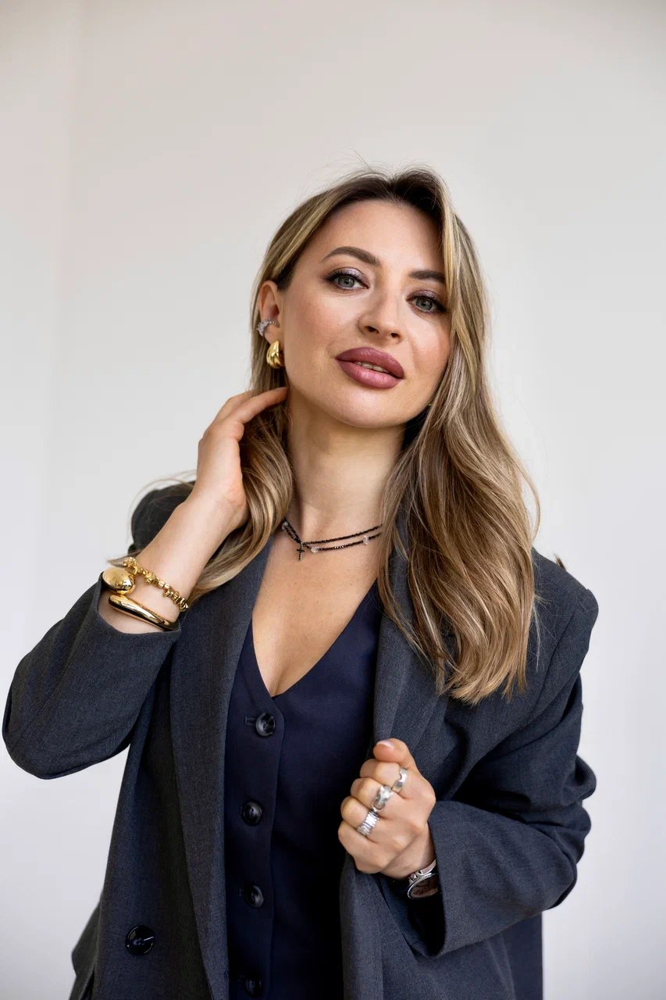

Дар
То, что ты делаешь и без денег. Там много интереса и возбуждения, и время в этом месте идёт совсем иначе.
Екатерина Корягина · метод Резонанса
Деньги творца приходят только к той, кто взяла ответственность за свой дар и за его проявленность в мир. Разбираю, как отличить своё дело души от выгодной ниши, в которой ты выгораешь третий год.
Разбор веду лично я, в личке @nastavnikkate.

Я долго гордилась тем, что я сильная.
Я умела быстро зарабатывать, вытаскивать проекты, держать фокус, поддерживать других и быть опорой для всех вокруг. Снаружи всё выглядело очень красиво.
Внутри я жила в напряжении.
Свою усталость я называла ответственностью. Свой контроль называла взрослой позицией. Внутреннее одиночество я объясняла себе фразой «мне наверное нужен мужчина моего уровня».
Правда была проще. Я не чувствовала себя. Я жила из головы, из силы, из «надо».
Деньги при этом приходили тяжело. Отношения были, глубины в них не было. Реализация шла, кайфа в ней не было.
Узнаёшь себя?
Этот же рисунок я вижу у сильных женщин каждый день. Действий в твоём дне больше, чем у трёх человек, и приносит это ровно столько, чтобы закрыть текущее.
Дальше включается вторая серия. Ты идёшь искать прибыльную нишу. Смотришь, за что сейчас платит рынок, встраиваешься туда, собираешь продукт по чужой схеме, потому что в чужом кейсе цифры были красивые.
Через три месяца тело говорит своё. Просыпаешься с тяжестью, к вечеру внутри пусто, продавать это ты уже не хочешь. И тут ты решаешь, что дело в тебе.
Деньги нового времени приходят через позволение и ответственность.
Код денег нового времени это твоя миссия души.
Проверка у неё простая. Это то, что ты можешь делать и без денег. То, во что ты проваливаешься на четыре часа и потом удивляешься, куда делся вечер. Там у тебя много интереса и живого возбуждения.
Это деньги творца. Собираются они из того, что ты создаёшь. Объём усилий, часов и надрыва тут ничего не решает, я проверяла это на себе много лет.
И приходят такие деньги только тогда, когда ты берёшь ответственность за свой дар и за его проявленность в мир.
Пока дар лежит внутри и его никто не видит, он остаётся твоим личным удовольствием. Вот как это выглядит в жизни.
Дар, за который никто не взял ответственность, так и остаётся хобби.
Мир бережёт тебя ровно так же, как в любой другой теме. Нет у тебя сейчас энергии на сто клиентов, значит сто клиентов он тебе и не даст. Он даст столько, сколько ты можешь провести и довести.
И он не вкладывает деньги в то, во что не вкладываешься ты сама. Ты держишь свой дар в тени, значит денег в этой точке пока нет.
Дальше идёт знакомый круг. Ты обижаешься, что твоё никому не нужно, скатываешься в обесценивание себя, добираешь деньги через силу в чужой нише, устаёшь ещё сильнее и уходишь от своего ещё дальше.
Мир платит за проявленное.
Как это работает
То, что ты делаешь и без денег. Там много интереса и возбуждения, и время в этом месте идёт совсем иначе.
Мир видит твой дар в конкретной форме: продукт, услуга, текст, эфир, сообщество. Невидимое не оплачивается.
Ты называешь цену, держишь качество и перестаёшь прятаться. Здесь дар и превращается в деньги творца.
Порядок тут работает только один. Сначала ты честно находишь свой дар, дальше даёшь ему форму, дальше берёшь за него ответственность. Большинство начинает с формы: собирает продукт под рынок, чтобы продать, и получает выгорание на третий месяц.
Метод Резонанса
Между тобой и твоим даром обычно стоит установка. Чужая фраза, которую ты однажды приняла как правду про себя.
Метод Резонанса это метод квантового роста. Ты возвращаешь себе целостность и уже из неё собираешь свою реальность. Из целостности растёт масштаб реализации, и деньги идут следом за ним.
Пять шагов, по которым это проходится.
Вопросами находим фразу, которая держит твой сценарий с деньгами и с делом. Чаще всего это «за это не платят», «я недостаточно хороша», «сначала стань кем-то».
Смотрим, где она сидит: горло, грудь, диафрагма, живот. Замеряем реакцию и зажим.
Легализуем заряд. Страх, стыд и обида уходят тогда, когда их наконец назвали своими именами.
На месте зажима освобождается энергия, и приходит ясное действие, которое до этого тебе в голову не приходило.
Дальше ты отслеживаешь своё состояние каждый день, и новое поведение закрепляется как привычка.
Закон, по которому это работает
Мироздание живёт по фрактальным законам. Мир умножает то, что ты излучаешь.
Идёшь за деньгами ради денег, значит идёшь из дефицита. Дефицит мир не множит, у него стоит базовая защита. Человека, который вибрирует нехваткой, просто не видно и не слышно.
Деньги это всегда следствие качественного вклада в людей. Вкладываешься по-настоящему, и обратная сторона приходит сама. Так работает и мой бизнес, и бизнес каждой женщины, которая довела своё дело до денег.
Три ответа складываются в одно направление. Человек обычно знает его давно и просто не разрешает себе туда пойти.
Возражение
Чужая ниша это чужая энергия. Схема рабочая, кейсы честные, и на тебе она встаёт колом, потому что твоё тело в ней молчит.
Первым это видно в продажах. Ты рассказываешь про свой продукт ровными словами, внутри нет ни грамма огня, и человек напротив покупает именно эту пустоту.
Когда ты говоришь из своего, включается поле. Ты объясняешь то же самое, и люди слышат тебя телом. Продажи нового времени идут через резонанс тела и души.
Поэтому сначала возвращают дар, дальше строят стратегию. В обратную сторону это стоит тебе трёх лет жизни и здоровья.
Твоё поле включается только на твоём деле.
Честно об опасениях
Дар редко выглядит как талант из детства. Чаще это то, что ты делаешь автоматически и считаешь ерундой, потому что тебе легко. На разборе мы вытаскиваем это в слова и в конкретную форму.
Значит у него пока нет формы и цены. Дар без проявленности живёт как хобби, это нормальная стадия. Смотрим, во что его упаковать прямо сейчас, из того, что у тебя уже есть.
Разбор идёт по конкретике: где сейчас твоя энергия, где твой дар, какая установка держит потолок и какие шаги ты делаешь после нашего разговора. Это работа с психикой и с реальными действиями.
Вспомни, чем те встречи заканчивались. План, который ты потом не смогла делать, собрали мимо твоей энергии. Мы начинаем с тела и с установки, действия рождаются уже из них.
Как устроен разбор
Разбор веду
лично я
Мы разбираем твою историю целиком: что ты делаешь сейчас, где твой дар, какая установка держит твой потолок и что с этим делать в ближайший месяц.
На выходе у тебя ясное направление и конкретные шаги, которые идут из твоей энергии. Чужие стратегии мы туда не тащим.
Условия, время и формат я называю в личке. Там же честно смотрю, твоя это работа сейчас или нет. Беру не всех: вижу, что тебе нужен другой специалист, скажу прямо.
Твой ход
Первый путь: закрыть эту страницу и остаться в чужом коде. Он рабочий, деньги там есть, стоят они твоей энергии и твоих лет.
Второй: назвать наконец своё и собрать дело вокруг него. Начинается это с одного разговора, в котором твой дар впервые звучит словами.
Напиши мне в личку слово РЕАЛИЗАЦИЯ, и я отвечу тебе лично.
Разбор веду лично я, в личке @nastavnikkate.
Написать мне: @nastavnikkate
Твоя Екатерина 🖤